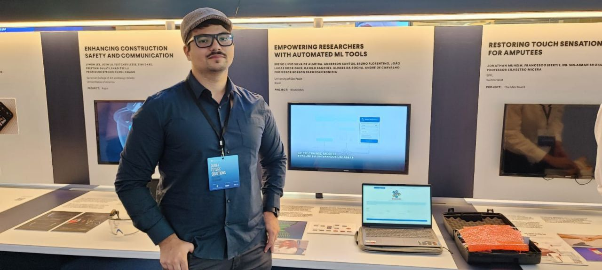
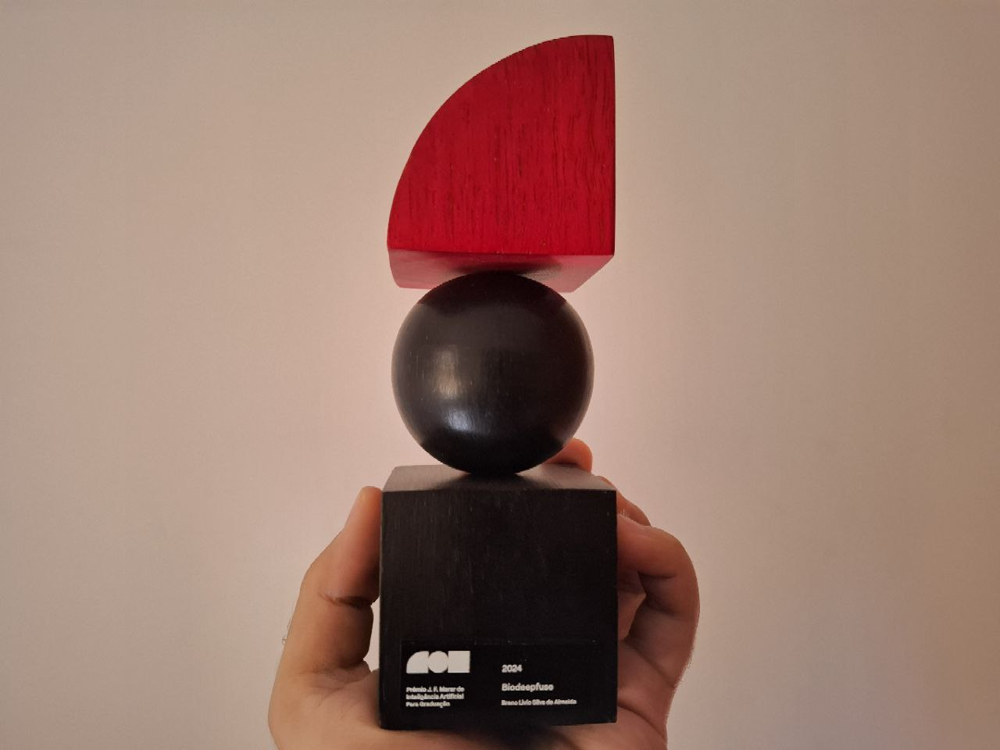

Previous Events
2024
17 - 22 November: BioAutoML was selected by Prototypes for
Humanity as one of the top 100 projects from nearly 3,000 applications
submitted by graduates from over 100 countries. The project received
funding for participation and was presented at the international festival
in Dubai. More information is available at: BioAutoML on the event website.

31 August: Co-authored a paper in Nature Communications based on research during my internship at the Big Data Biology Lab.
02 July: I officially joined the PhD program at the Institute of Mathematics and Computer Sciences (ICMC) of the University of São Paulo (USP).
23 March: BioDeepFuse was published in the RNA Biology journal.
29 February: I received the J. F. Marar Artificial Intelligence Prize for Undergraduate Research
with the project "BioDeepFuse:
Empowering Researchers in Life Sciences with Deep Learning". Project was
selected winner considering criteria such as academic and social relevance,
adherence to the United Nations' Sustainable Development Goals (SDGs), and
academic performance. More details in Portuguese here:
News shared by the University of São Paulo.

2023
26 - 30 June: BioDeepFuse was presented as an abstract at the 16th symposium on Genetics and Bacterial Ecology 2023 (BAGECO 2023) in Copenhagen, Denmark.
9 - 13 July: BioAutoML was presented as an abstract at the 10th FEMS Congress of European Microbiologists in Hamburg, Germany.
2022
1 July - 30 September: Period of my internship at the Big Data Biology Lab. I worked on the rarefaction of small ORFs, and the work can be consulted on this blog post.
27 June: BioAutoML was published in Briefings in Bioinformatics.
2021
22 - 26 November: I presented our work on feature importance analysis of non-coding DNA/RNA sequences at the Brazilian Symposium on Bioinformatics (BSB) 2021. The presentation can be found here and full paper here.